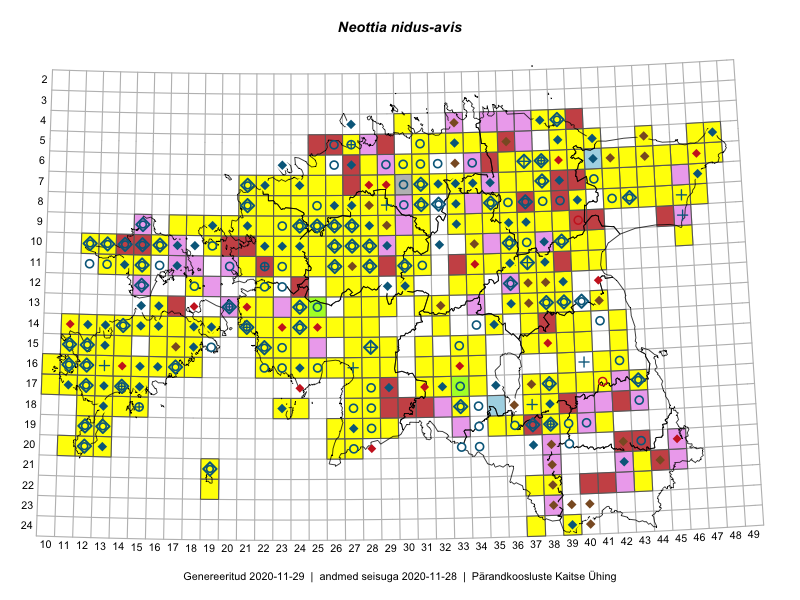

Neottia nidus-avis
Uuendatud: 2016-12-01
Kaardile koondatud taksonid: Neottia nidus-avis (L.) Rich.

Kaart põhineb 513 kirjel.
Kuvatud viited 20 esimesele andmebaasikirjele, ülejäänud PlutoFis
- Toomas Kukk, Thea Kull, Timo Luhamäe, Ott Luuk, Peedu Saar: 2015-06-29: 14-17: ala
- Toomas Kukk, Eerik Leibak: 2015-08-09: 14-15: ala
- Toomas Kukk, Eerik Leibak: 2015-08-09: 14-15: GPS punkt
- Toomas Kukk, Eerik Leibak: 2015-08-12: 09-17: ala
- Toomas Kukk, Eerik Leibak: 2015-08-12: 09-17: GPS punkt
- Toomas Kukk, Peedu Saar: 2014-09-25: 07-42: ala
- Toomas Kukk, Peedu Saar: 2014-09-25: 07-42: GPS punkt
- Toomas Kukk, Peedu Saar: 2014-09-13: 07-42: ala
- Toomas Kukk, Peedu Saar: 2014-09-24: 06-40: ala
- Toomas Kukk, Peedu Saar: 2014-09-24: 06-40: GPS punkt
- Toomas Kukk, Raivo Kalle: 2015-05-14: 10-41: ala
- Toomas Kukk, Raivo Kalle: 2015-05-14: 10-41: GPS punkt
- Toomas Kukk, Raivo Kalle: 2015-05-13: 06-38: ala
- Toomas Kukk, Raivo Kalle: 2015-05-13: 07-37: ala
- Toomas Kukk, Raivo Kalle: 2015-05-13: 07-37: GPS punkt
- Toomas Kukk, Raivo Kalle: 2015-05-13: 06-38: GPS punkt
- Peedu Saar, Liina Oja: 2015-06-11: 16-29: GPS punkt
- Peedu Saar: 2015-07-15: 15-39: GPS punkt
- Peedu Saar, Ott Luuk: 2015-07-27: 11-35: GPS punkt
- Ott Luuk, Jaak-Albert Metsoja: 2015-05-27: 12-22: ala